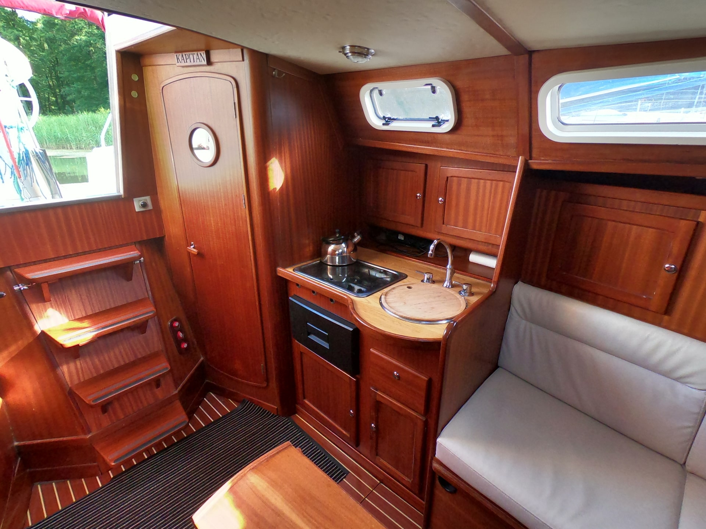

Jacht
Jacht TES 32 DREAMER PESARO
TES 32 Dreamer – to jeden z największych jachtów przeznaczony do długich urlopowych rejsów. Bardzo obszerne wnętrze daje poczucie absolutnego komfortu i intymności dla 6 – 8 (a nawet 10) osobowej załogi. Jacht dysponuje 3 oddzielnymi kabinami oraz kabiną sanitarną z WC. Żeglowanie Dreamerem to prawdziwa przyjemność zarówno dla sternika, jak i dla załogi, która ma do dyspozycji doskonale dobrany osprzęt pokładowy.Dodatkowy element łączący daszek z szprycbudą umożliwia zakrycie całego kokpitu podczas odpoczynku w porcie. Temu rozwiązaniu zawdzięczamy niezwykłą swobodę korzystania z jachtu – czy słońce, czy deszcz, czy chociażby ciekawskie spojrzenia osób niepożądanych. Jednostka wyposażona jest w długi trap bukszpryt, dzięki któremu wejście w porcie na dziób jest niezwykle łatwe i wygodne. Doskonale sprawdza się zarówno pod żaglami jak i na silniku. Odznacza się imponującym momentem prostującym, co stawia Tes 32 w gronie najbardziej statecznych i bezpiecznych polskich jachtów żaglowych. Z uwagi na doskonałe warunki bytowe oraz łatwość obsługi, śmiało można mówić o rodzinnym charakterze tej jednostki.

Wyposażenie
- Ubezpieczony
- Zaburtowy silnik w studni YAMAHA 15KM, manetka + patent skrętu
- Zabudowa drewniana mahoniowa
- Rok budowy 2010
- ECHOSONDA/LOG
- SZPRYCBUDA
- BIMINI z dostawką pozwalającą na zadaszenie całego kokpitu
- Ścianki pionowe pozwalające na całkowite osłonięcie kokpitu
- Grot na pełzaczach z Lazy Jack (grot z możliwością refowania)
- Fok na sztywnym sztagu z osłonami UV
- Wszystkie liny sprowadzone do kokpitu (bloki zwrotne, stopery, kabestany)
- Miecz uchylny
- KOŁO STEROWE
- STER STRUMIENIOWY
- Patent do kładzenia masztu
- Kabestany samoknagujące
- Podwójny sztormreling
- Stolik w kokpicie
- Oświetlenie elektryczne
- TV + HomeBOX ANDROID
- Radio CD/MP3
- Gniazda do ładowania tel. komórkowych w każdej kajucie
- Kuchenka gazowa
- Naczynia, sztućce, naczynia kuchenne
- Instalacja wody pitnej i zaburtowej
- CIEPŁA WODA
- Prysznic w kokpicie
- OGRZEWANIE – TRUMA, niezależne
- LODÓWKA agregatowa, szufladowa, 30l
- WC chemiczne
- Środki ratunkowe
- Cumy, odbijacze, kotwica, pagaje, bosak
- Podstawowe narzędzia
Dane techniczne
| Model jachtu: | TES 32 DREAMER |
| Wymiary długość/szerokość: | 9.70m / 2.95m |
| Zanurzenie minimalne/maksymalne: | 0.45m / 1.65m |
| Wysokość w kabinie: | 1,85m |
| Powierzchnia żagli: | 40m2 |
| Liczba osób komfortowo: | 6-8 |
| Liczba osób maksymalnie: | 10 |